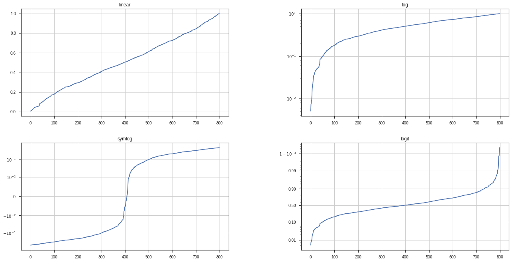

解决中文字体不能显示问题
http://www.pythoner.com/200.html
进入Python安装目录下的Lib\site-packages\matplotlib\mpl-data目录，
cd (你的python 目录)\site-packages\matplotlib\mpl-data
|
打开matplotlibrc文件
删除font.family和font.sans-serif两行前的#，
font.family : sans-ser font.sans-serif : DejaVu Sans, Bitstream Vera Sans, Lucida Grande, Verdana, Geneva, Lucid, Arial, Helvetica, Avant Garde, sans-serif
|
并在font.sans-serif后添加微软雅黑字体（Microsoft YaHei）
font.family : sans-ser font.sans-serif : Microsoft YaHei, DejaVu Sans, Bitstream Vera Sans, Lucida Grande, Verdana, Geneva, Lucid, Arial, Helvetica, Avant Garde, sans-serif
|
引入seaborn
为了画图更漂亮，引入seaborn。但中文又乱码了，真是个美丽的错误
import seaborn as sns sns.set_style("darkgrid",{"font.sans-serif":['Microsoft YaHei', 'Arial']})
|
https://github.com/mwaskom/seaborn/issues/1009
<module 'posixpath' from '/home/xu/venv/lib/python3.5/posixpath.py'>
Simple Plot
import matplotlib.pyplot as plt import numpy as np import seaborn as sns sns.set_style("darkgrid",{"font.sans-serif":['Microsoft YaHei', 'Arial']}) t = np.arange(0.0, 2.0, 0.01) s = 1 + np.sin(2*np.pi*t) plt.plot(t, s) plt.xlabel('time (s)') plt.ylabel('voltage (mV)') plt.title(u'实例') plt.grid(True) plt.savefig("test.png") plt.show()
|

Subplot demo
import numpy as np import matplotlib.pyplot as plt plt.figure(figsize=(16,9)) x1=[0,1,2,3,4,5] x2 = np.linspace(0.0, 2.0) y1 = [-1,-10,3,9,-4,5] y2 = np.cos(2 * np.pi * x2) plt.subplot(2, 1, 1) plt.plot(x1, y1, '-o') plt.xlabel('X doggy') plt.ylabel('Damped oscillation') plt.title('A tale of 2 subplots') plt.subplot(2, 1, 2) plt.plot(x2, y2, '.:r') plt.xlabel('time (s)') plt.ylabel('Undamped') plt.title('A tale of 2 subplots') plt.show()
|
import numpy as np import matplotlib.mlab as mlab import matplotlib.pyplot as plt np.random.seed(0) mu = 100 sigma = 15 x = mu + sigma * np.random.randn(437) num_bins = 50 fig, ax = plt.subplots() n, bins, patches = ax.hist(x, num_bins, normed=1) y = mlab.normpdf(bins, mu, sigma) ax.plot(bins, y, '--') ax.set_xlabel('Smarts') ax.set_ylabel('Probability density') ax.set_title(r'Histogram of IQ: $\mu=100$, $\sigma=15$') fig.tight_layout() plt.show()
|
Histograms
array([ 0.00529265, 0.8005648 , 0.07826018, -0.39522898])
import numpy as np import matplotlib.mlab as mlab import matplotlib.pyplot as plt np.random.seed(0) mu = 0 sigma = 100 x = mu + sigma * np.random.randn(437) num_bins = 30 fig, ax = plt.subplots() n, bins, patches = ax.hist(x, num_bins) y = mlab.normpdf(bins, mu, sigma) ax.plot(bins, y, '--') ax.set_xlabel(u'Smarts') ax.set_ylabel('Probability density') ax.set_title(r'Histogram of IQ: $\mu={}$, $\sigma={}$'.format(mu,sigma)) plt.grid(True) fig.tight_layout() plt.show()
|
jointplot
import numpy as np import matplotlib.mlab as mlab import matplotlib.pyplot as plt import numpy as np from scipy.stats import kendalltau import seaborn as sns sns.set(style="ticks") rs = np.random.RandomState(11) x = rs.gamma(2, size=1000) y = -.5 * x + rs.normal(size=1000) plt.subplot(2, 1, 1) sns.jointplot(x, y, kind="kde", stat_func=kendalltau, color="#9CB391",space=0.5) plt.subplot(2, 1, 2) sns.jointplot(x, y, kind="hex", stat_func=None, color="#9CB391") plt.show()
|
import numpy as np import matplotlib.mlab as mlab import matplotlib.pyplot as plt import seaborn as sns sns.set(style="ticks") df = sns.load_dataset("anscombe") sns.lmplot(x="x", y="y", col="dataset", hue="dataset", data=df, col_wrap=2, ci=None, palette="muted", size=4, scatter_kws={"s": 50, "alpha": 1}) plt.show()
|
heatmap
import numpy as np from scipy.stats import kendalltau import seaborn as sns sns.set(style="ticks") rs = np.random.RandomState(11) x = rs.gamma(2, size=1000) y = -.5 * x + rs.normal(size=1000) sns.jointplot(x, y, kind="hex", stat_func=kendalltau, color="#4CB391") plt.show()
|
from pandas import DataFrame
|
df = DataFrame({'X':['d','g','d','miao',9,3],'Y':[11,12,13,14,15,16],'Z':[10,20,30,40,50,60]})
|
import matplotlib.pyplot as plt plt.plot([1,9,3,4],'-o') plt.ylabel('some numbers') plt.axis([0, 6, 0, 20]) plt.show()
|
Matplotlib 修饰
X轴，Y轴标签
import matplotlib.pyplot as plt plt.plot([1,2,3,4]) plt.ylabel('some numbers',fontsize=18) plt.show()
|
X,Y 轴范围
import matplotlib.pyplot as plt plt.plot([1,2,3,4], [1,4,9,16], 'ro') plt.axis([-6, 6, -5, 20]) plt.show()
|
点型，线型
import numpy as np import matplotlib.pyplot as plt t = np.arange(0., 5., 0.2) p1,p2,p3=plt.plot(t, t, 'r--', t, t**2, 'bs', t, t**3, 'g^') plt.show()
|
折线图
import matplotlib.pyplot as plt plt.plot([1,2,3,4,4.7,5.8], [8,4,9,0,2.5,17.4], 'r-o',linewidth=2) plt.axis([0, 6, 0, 20]) plt.show()
|
Controlling line properties 控制线型
lines = plt.plot(x1, y1, x2, y2) plt.setp(lines, color='r', linewidth=2.0) plt.setp(lines, 'color', 'r', 'linewidth', 2.0)
|
[None, None, None, None]
lines = plt.plot([1, 2, 3]) plt.setp(lines)
|
agg_filter: unknown
alpha: float (0.0 transparent through 1.0 opaque)
animated: [True | False]
antialiased or aa: [True | False]
axes: an :class:`~matplotlib.axes.Axes` instance
clip_box: a :class:`matplotlib.transforms.Bbox` instance
clip_on: [True | False]
clip_path: [ (:class:`~matplotlib.path.Path`, :class:`~matplotlib.transforms.Transform`) | :class:`~matplotlib.patches.Patch` | None ]
color or c: any matplotlib color
contains: a callable function
dash_capstyle: ['butt' | 'round' | 'projecting']
dash_joinstyle: ['miter' | 'round' | 'bevel']
dashes: sequence of on/off ink in points
drawstyle: ['default' | 'steps' | 'steps-pre' | 'steps-mid' | 'steps-post']
figure: a :class:`matplotlib.figure.Figure` instance
fillstyle: ['full' | 'left' | 'right' | 'bottom' | 'top' | 'none']
gid: an id string
label: string or anything printable with '%s' conversion.
linestyle or ls: ['solid' | 'dashed', 'dashdot', 'dotted' | (offset, on-off-dash-seq) | ``'-'`` | ``'--'`` | ``'-.'`` | ``':'`` | ``'None'`` | ``' '`` | ``''``]
linewidth or lw: float value in points
marker: :mod:`A valid marker style <matplotlib.markers>`
markeredgecolor or mec: any matplotlib color
markeredgewidth or mew: float value in points
markerfacecolor or mfc: any matplotlib color
markerfacecoloralt or mfcalt: any matplotlib color
markersize or ms: float
markevery: [None | int | length-2 tuple of int | slice | list/array of int | float | length-2 tuple of float]
path_effects: unknown
picker: float distance in points or callable pick function ``fn(artist, event)``
pickradius: float distance in points
rasterized: [True | False | None]
sketch_params: unknown
snap: unknown
solid_capstyle: ['butt' | 'round' | 'projecting']
solid_joinstyle: ['miter' | 'round' | 'bevel']
transform: a :class:`matplotlib.transforms.Transform` instance
url: a url string
visible: [True | False]
xdata: 1D array
ydata: 1D array
zorder: any number
多图和多轴
import numpy as np import matplotlib.pyplot as plt def f(t): return np.exp(-t) * np.cos(2*np.pi*t) t1 = np.arange(0.0, 5.0, 0.1) t2 = np.arange(0.0, 5.0, 0.02) plt.figure(1) plt.subplot(211) plt.plot(t1, f(t1), 'bo', t2, f(t2), 'k') plt.subplot(212) plt.plot(t2, np.cos(2*np.pi*t2), 'r--') plt.show()
|
import matplotlib.pyplot as plt plt.subplots(figsize=(20, 10)) plt.subplot(211) plt.plot([1, 2, 3]) plt.subplot(212) plt.plot([4, 5, 6]) plt.figure(2) plt.plot([4, 5, 6],'-o') plt.figure(1) plt.subplot(211) plt.title('Easy as 1, 2, 3') plt.show()
|
使用文本 Working with text
xlabel,ylabel,title,text 都可以使用文本
import numpy as np import matplotlib.pyplot as plt np.random.seed(19680801) mu, sigma = 100, 15 x = mu + sigma * np.random.randn(10000) n, bins, patches = plt.hist(x, 50, normed=1, facecolor='g', alpha=0.75) plt.xlabel('Smarts') plt.ylabel('Probability') plt.title('Histogram of IQ') plt.text(60, .025, r'$\mu=100,\ \sigma=15$') plt.axis([40, 160, 0, 0.03]) plt.grid(True) plt.show()
|
使用数学表达式 Using mathematical expressions in text
使用TeX 表达式 equation expressions
Tex表达式生成网址
注释文本 Annotating text
import numpy as np import matplotlib.pyplot as plt plt.figure() ax = plt.subplot(111) t = np.arange(0.0, 5.0, 0.01) s = np.cos(2*np.pi*t) line, = plt.plot(t, s, lw=2) plt.annotate('local max', xy=(2, 1), xytext=(3, 1.5), arrowprops=dict(facecolor='black', shrink=0.05), ) plt.ylim(-2,2) plt.show()
|
对数轴 和其他非线性轴 Logarithmic and other nonlinear axis
import numpy as np import matplotlib.pyplot as plt from matplotlib.ticker import NullFormatter np.random.seed(19680801) y = np.random.normal(loc=0.5, scale=0.4, size=1000) y = y[(y > 0) & (y < 1)] y.sort() x = np.arange(len(y)) plt.figure(figsize=(20,10)) plt.subplot(221) plt.plot(x, y) plt.yscale('linear') plt.title('linear') plt.grid(True) plt.subplot(222) plt.plot(x, y) plt.yscale('log') plt.title('log') plt.grid(True) plt.subplot(223) plt.plot(x, y - y.mean()) plt.yscale('symlog', linthreshy=0.01) plt.title('symlog') plt.grid(True) plt.subplot(224) plt.plot(x, y) plt.yscale('logit') plt.title('logit') plt.grid(True) plt.gca().yaxis.set_minor_formatter(NullFormatter()) plt.subplots_adjust(top=0.92, bottom=0.08, left=0.10, right=0.95, hspace=0.25, wspace=0.35) plt.show()
|

图片的放大与缩小
plt.figure(figsize=(16,9))fig, ax = plt.subplots(figsize=(20, 10))
import numpy as np import matplotlib.pyplot as plt plt.figure(figsize=(16,9)) ax = plt.subplot(111) t = np.arange(0.0, 5.0, 0.01) s = np.cos(2*np.pi*t) line, = plt.plot(t, s, lw=2) plt.annotate('local max', xy=(2, 1), xytext=(3, 1.5), arrowprops=dict(facecolor='black', shrink=0.05), ) plt.ylim(-2,2) plt.show()
|